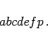
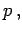
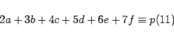

Inhalt Index DeskTop Bronstein

 Algebra und Diskrete Mathematik Elementare Zahlentheorie Codierungen Prüfzeichenverfahren
Algebra und Diskrete Mathematik Elementare Zahlentheorie Codierungen Prüfzeichenverfahren


In Apotheken wird zur Kennzeichnung von Arzneimitteln ein ähnliches Nummernsystem mit Prüfziffer verwendet. Jedes Medikament erhält eine 7-stellige Pharmazentralnummer:
|  | (5.286a) |
Die letzte Ziffer ist die Prüfziffer  die man als kleinste nichtnegative Zahl erhält, die die Kongruenz
|  | (5.286b) |
erfüllt. Auch bei diesem Prüfzifferverfahren werden die Verwechslung einer Ziffer und Drehfehler durch Vertauschung zweier Ziffern stets aufgedeckt.